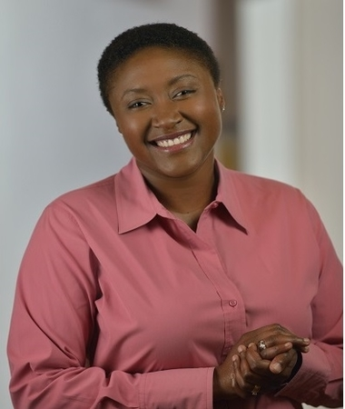
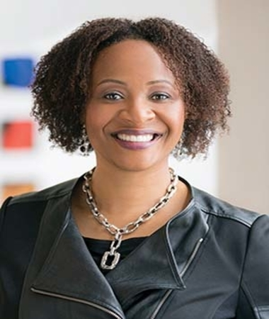

Note Worthy Black Innovators in Tech
Aicha S. Evans
CEO, Zoox
As Senior Vice President and Chief Strategy Officer at Intel Corp., Aicha S. Evans leads Intel’s efforts to convert from a PC-centric company to a data-centric juggernaut. In June 2020, Evans led the acquisition of her company by Amazon for US$1.3 billion. Evans is the first African American female CEO of an autonomous vehicle technology company
Ehrika C. Gladden
Vice President, Logitech
She built a program for diverse talent attraction, retention, and promotion, which has resulted in three times the promotion rate for program participants.Ehrika also led Cisco’s $19 billion business unit, which oversees global go-to-market performance, requirements and competitive intelligence for enterprise networking core routing, software, WAN/LAN, wireless and security products and solutions.
Toni Townes-Whitley

President, Microsoft
She’s the highest-ranking African American female executive at Microsoft with responsibility for approximately $11 billion P&L and 2,000-plus sales professionals. As such, she has developed a strong, undisputed track record for accelerating profitable business performance and building high-performance teams.